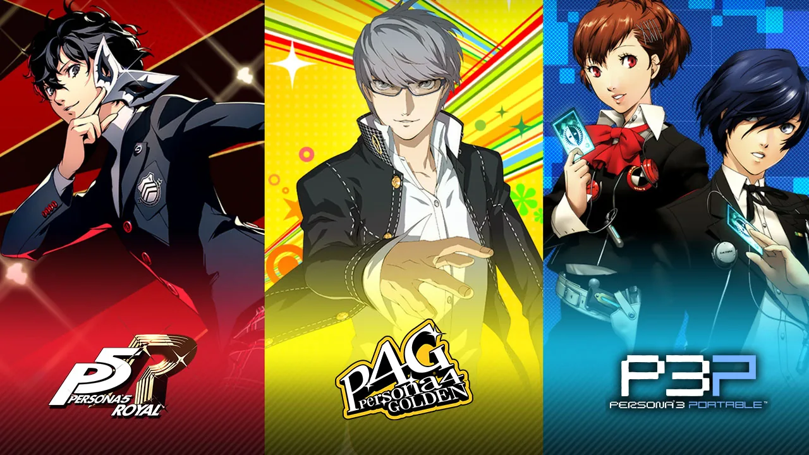

Persona
Persona - seria japońskich gier fabularnych firmy Atlus. Seria jest spin-offem Megami Tensei, a pierwsza gra z serii powstała w oparciu o świat przedstawiony w Shin Megami Tensei If....
Od czasu wydania w 1996 roku pierwszej gry z serii, Revelations: Persona na konsolę PlayStation, wydano 9 tytułów (w tym 4 spin-offy), z których ostatnim jest Persona 5 na konsole PlayStation 3 i PlayStation 4.
Nazwa serii pochodzi od istot nadnaturalnych, opartych na personach bohaterów, które mogą oni przyzywać w walce.
Gra podzielona jest na dwa segmenty. Szkolne życie gdzie uczęszczamy na zajęcia, oraz walkę w doungeonach gdzie bijemy się za pomocą tytułowych „person”.